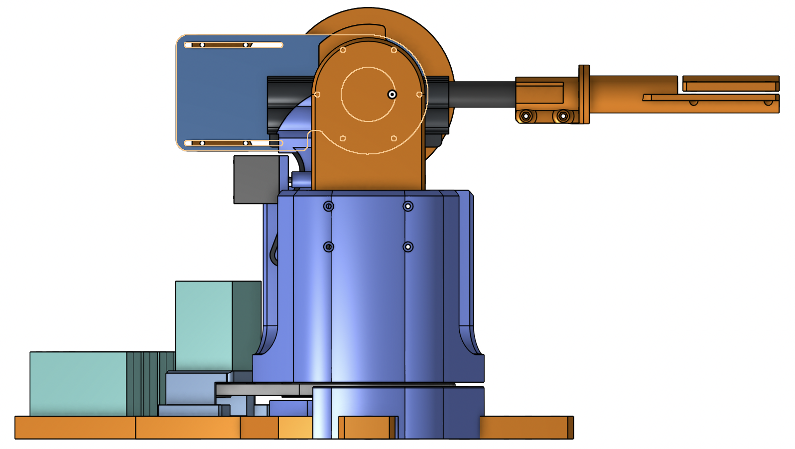
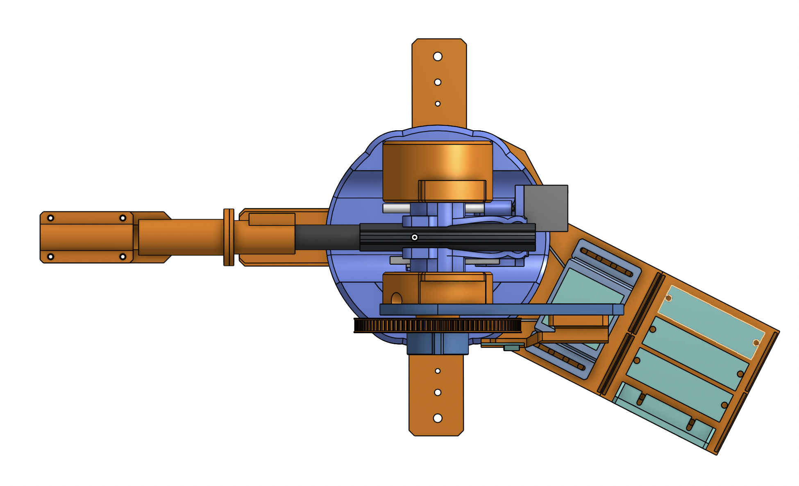
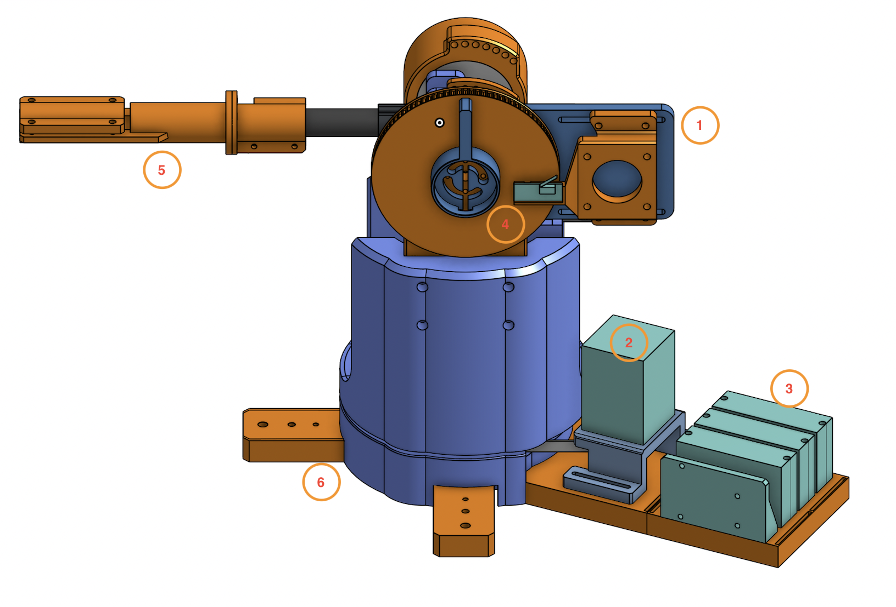
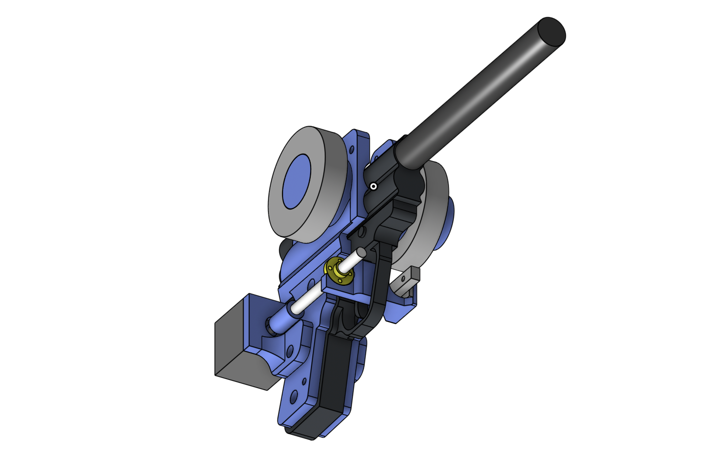
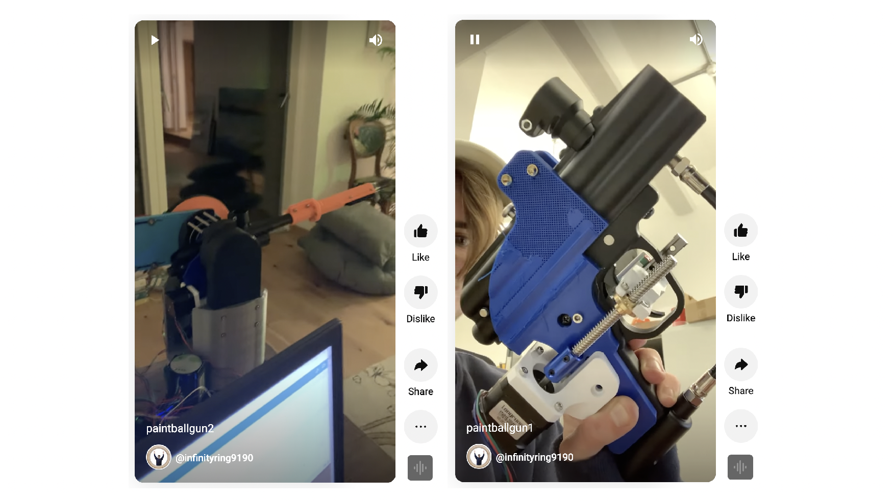

Automated Paint Ball Gun
This was one of those "what if?" ideas I actually committed to. The idea is quite simple, buy a cheap paint ball gun, mount it on to a turret I cheaply made from spare plastic and stepper motors. Make the turret stupidly accurate and see if I can make any decent art.



The gun is made out of entirely 3D printed plastic parts (excluding bearings, motors etc). So much of the design was jigsawed together due to the 3D print size limits. A simple color key is used, blue/orange are 3D printed and teal is electronics.
Some key features highlighted:
- 1. Vertical axis motor mount - Works on a pulley system, with a gear ratio of
- 2. Horizontal axis motor mount - Employs identical pulley system as vertical axis motor.
- 3. Three Motors Controllers and an Arduino - The design has 3 motors, two for motion and one to pull the trigger.
- 4. Vertical axis limit switch - Allows the turret to home.
- 5. Laser pointer adaptor - A quick fit laser pointer attachment so that I can verify the guns movements before starting an actual print.

This is the first sub-assembly I created for this design. Instead of automating the design such as by-passing the trigger system and using an electronically controlled air valve, I opted to go for a more roundabout approach using a stepper motor to drive a lead screw. I did this because I wanted a contraption that resembled something out of Mad Max.
Those two grey rings are the bearings. They are complete overkill, the look cool though and add stability to the design.


Software was written in the using the arduino language. The software logic at this stage is simple, the inputs include:
- Canvas height
- Canvas width
- Turrets x position from the bottom left corner of the Canvas
- Turrets y position from the bottom left corner of the Canvas

Testing the trigger system Testing the movement system